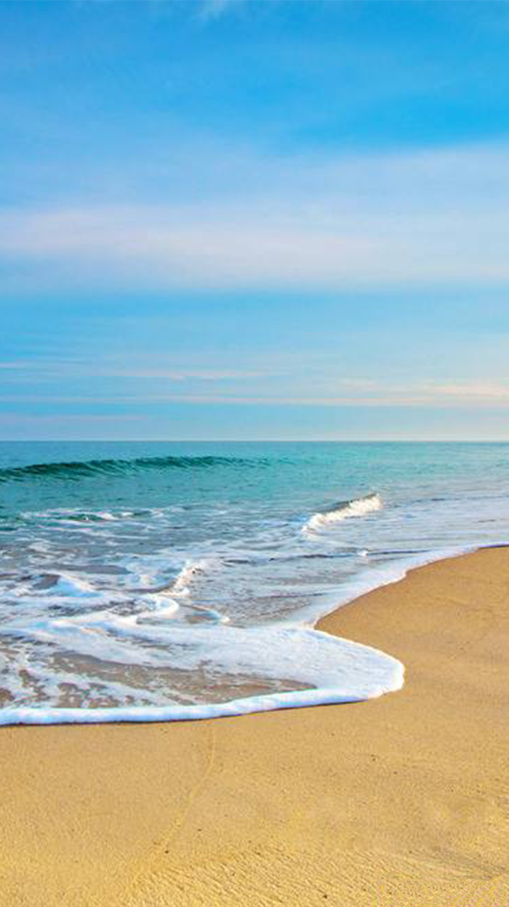

<!DOCTYPE html>
<html>
<head>
    <meta charset="utf-8">
    <meta name="viewport" content="width=device-width,initial-scale=1,minimum-scale=1,maximum-scale=1,user-scalable=no" />
    <title></title>
    <script src="js/mui.min.js"></script>
    <link href="css/mui.min.css" rel="stylesheet"/>
	<!--<link rel="stylesheet" href="css/plp.css" />-->
	<style>
		body{
			margin: 0;
			padding: 0;
		}
		a{
			text-decoration: none;
		}
		.mui-backdrop {
		    position: fixed;
		    top: 0px;
		    right: 0;
		    bottom: 60px;
		    left: 0;
		    z-index: 998;
		    background-color: rgba(0,0,0,.3);
		}
		.mui-content{
			background-image: url(img/bj.png);
		}
		.mui-bar-nav{
			-webkit-box-shadow: none;
    		box-shadow: none;
		}
		options = {
		 scrollY: false, //是否竖向滚动
		 scrollX: false, //是否横向滚动
		 indicators: false, //是否显示滚动条
		 bounce: false //是否启用回弹
		}
		
	
        #box{
        	/*display: none;*/
            position: absolute;
            left: 50px;
            background: url("open_bottle.png") no-repeat;
            height: 200px;
            width: 200px;
        }
        #box{
        -webkit-animation: rotating 1.5s linear 1;
        -moz-animation: rotating 1.5s linear 1;
            -o-animation: rotating 1.5s linear 1;
            animation: rotating 1.5s linear 1;
        }
         @-webkit-keyframes rotating {
           from { 
           	-webkit-transform: rotate(0);
           	left:0px;
           	top:0px;         
        }
            to { 
            	-webkit-transform: rotate(360deg);
            	left:100px;
            	top:-270px;
            }
      }
        @keyframes rotating {
             from {
             	 transform: rotate(0);
             	 	left:0px;
           			top:0px;
             	 }
           to {
           	 transform: rotate(360deg);
           	 left:100px;
             top:-270px;
           	}
         }
         @-moz-keyframes rotating {
           from { 
           	-moz-transform: rotate(0);
           	left:0px;
           	top:0px;
           	}
             to { 
             	-moz-transform: rotate(360deg);
             	-webkit-transform: scale(-1);
             	left:100px;
            	top:-270px;
             	}
         }
	</style>
</head>
<body>

	<div class="mui-content" style="margin-left: 0;height: 100%;">
		<!---->
		<div class="mui-scroll-wrapper">
			<div class="mui-scroll">
				<ul class="mui-table-view mui-grid-view" style="margin:0;padding: 0;">
					<li class="mui-table-view-cell mui-media" style="width:100%;height:100%;margin: 0;padding: 0;">
							
					</li>
				</ul>
			</div>
		</div>
	</div>

	<nav class="mui-bar mui-bar-tab " id="nav"style="background:#00a0e9 ;margin-top: 5px;"> 
		<a  href="Thrown_sea.html" class="mui-tab-item mui-active" id="box" >  
		    <span class="mui-tab-label">   
		        
		    </span> 
		</a>  
   </nav>
</body>
<script>
	mui("#box").on('tap','.Throw',function(event){
		mui.openWindow({
					url:'Trow.html'
				});
	});
</script>
</html>